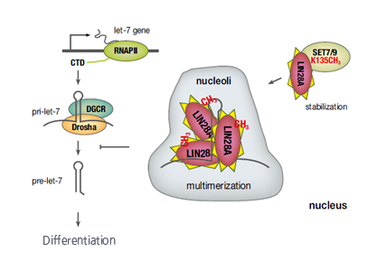

주제별 연구성과
주제별 연구성과
KAIST RESEARCH ACHIEVEMENTS
줄기세포의 성장을 조절하는 단백질
생명과학과 이대엽ㆍ한용만
요약
메틸화된 LIN28A의 핵, 특히 인으로의 수송 과정과 let-7 miRNA 성숙과정의관련성에 대한 후속 연구 진행, 히스톤 모노메틸화 효소인 SET7/9의 히스톤 및 비 히스톤의 메틸화의 차이를 구명하기 위한 후속 연구를 진행 하고 있다. 유도 만능 줄기세포의 효율을 증대할 수 있는 새로운 방법론을 제시하여 줄기세포 치료 및 암 치료 등 임상분야로 다양하게 적용하고자 한다.
연구내용
유도만능줄기세포(iPSC)의 주요 인자인 LIN28은 줄기세포의 자기재생(self-renewal)과 전분화능(pluripotency) 그리고 분화(differentiation)와 발달과정(development)을 조절하는 것이 중요하며, 세포성장 조절에 결정적인 c-Myc 유전자 발현을 조절하여 줄기세포 뿐만 아니라 암세포의 조절에도 관여한다. LIN28은 대표적인 miRNA인 let-7 miRNA의 성숙과정을 조절함으로써 세포성장을 조절하는 것으로 알려졌으나, 후성유전학적 분자 조절기전에 대한 명확한 증거가 제시되지 못하였다. 따라서 본 연구를 통해 인간 배아줄기세포에서 LIN28에 의한 let-7 miRNA 성숙과정 조절의 후성유전학적 분자기전을 명확하게 하였으며, 배아줄기세포 뿐만 아니라 유도만능줄기세포(iPSC)와 암치료 등의 임상단계까지 폭 넓게 확장될 수 있는 기술을 확보한 것에 중요한 의의를 지닌다.
LIN28은 줄기세포의 전분화능과 유도만능줄기세포(iPS cell) 생산에 사용되는 단백질이며 렛세븐(let-7) 마이크로 RNA(miRNA)를 조절한다. 본 연구를 통해 히스톤 모노메틸화 효소인 SET7/9에 의해 메틸화된 LIN28A 단백질이 핵에서 성숙한 줄기세포 성장에 핵심 단백질을 조절하는 렛세븐 마이크로 RNA(이하 성장조절 RNA)의 생성을 방해 한다는 분자 기전을 제시하였다. 이는 기존에 밝혀진 LIN28A가 세포질에서 텃효소(TUTase)-의존적으로 성장조절 RNA 성숙과정을 저해하는 기전이외에도 핵 내에서 메틸화에 의해 텃효소-비의존적으로 성장조절 RNA 성숙과정을 저해한다는 분자적 기전을 새롭게 규명하였고 향후 줄기세포를 통한 불치병과 난치병 치료와 항암물질 개발의 새로운 표적이 될 것으로 기대된다.

 그림 1. 본 연구 결과를 통해 LIN28A에 의한 배아줄기세포의 전분화능 조절 등 줄기세포의 특성을 이해하는 데 큰 도움이 될 것으로 기대된다. LIN28A는 배아줄기세포뿐만 아니라 유도만능줄기세포(iPSC)와 암세포와도 밀접한 관련이 있기 때문에 그 응용 가능성이 매우 높을 것이라 기대된다. 본 연구에서 규명한 사실을 바탕으로 유도만능줄기세포의효율을 증대할 수 있는 새로운 방법론을 제시할 수 있으며, 항암 물질의 새로운 표적으로도 응용 가능성이 높을 것으로 기대된다.
연구실적
ㆍCell Stem Cell(IF:22.151) 표지 논문 및 Preview에 대표 논문으로 소개
ㆍ언론 보도: 동아일보 등 8건
ㆍ줄기세포 뿐 만 아니라 암세포 성장 및 억제에 대한 억제제 개발을 위한 platform 기술로 응용가능하며 다국적 기업인 밀리포어와 기술이전 협상 중
참고자료
ㆍ논문: Seung-Kyoon Kim#, Hosuk Lee#, Kyumin Han, Sang Cheol Kim, Yoonjung Choi, Sang-Wook Park1, Geunu Bak, Younghoon Lee, Jung Kyoon Choi, Tae- Kyung Kim, Yong-Mahn Han*, and DaeyoupLee*(2014) SET7/9 methylation of the pluripotency factor LIN28A is a nucleolar localization mechanism that blocks let-7 biogenesis in human ESCs. Cell Stem Cell 15, 735-749
연구지원
ㆍ한국연구재단 바이오·의료기술개발사업
ㆍ시스템헬스케어